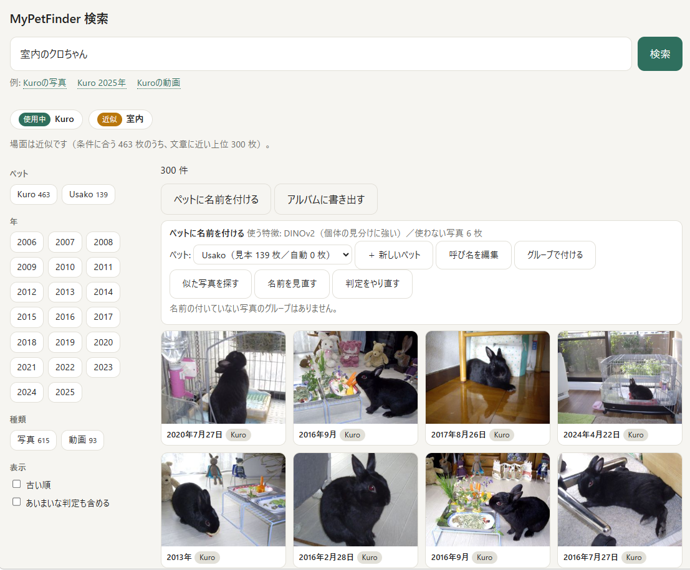

はじめるまで、4つの手順
専門的な設定はありません。写真のあるフォルダを教えて、あとは名前を付けるだけです。
フォルダを選ぶ
写真・動画のあるフォルダを入力します。元の写真・動画は、変更しません。
解析を待つ
ワンボタンで始まります。途中で閉じても、次回は続きから再開します。
ペットに名前を付ける
似た写真のグループが出ます。同じ子のグループを選んで名前を付けます。全部に付ける必要はありません。
名前と場面で探す
「室内のクロちゃん」「芝生で遊ぶ」など、普通の言葉で検索できます。
できること、できないこと
得意なことと苦手なことを、先にお伝えします。
できること
- ウサギ・犬・猫・ネズミなど、種類の違うペットを、名前で見分けて探す
- 同じ種類でも、毛色や顔つきが違う子を、別々に登録する
- 別の呼び名（ニックネーム）でも、同じ子として検索する
- 動画も、写っているペットで探す
- 「抱っこ」「散歩」「ケージ」など、場面や場所の言葉で絞り込む
- 気に入った結果を、別のフォルダに、アルバムとして書き出す
できないこと
- 同じ種類で、見た目がそっくりな子の見分け（白いラット2匹など）。取り違えやすい組は、警告を出します
- 場面の検索を、確実に当てること。文章に近い写真を並べる近似なので、外れることがあります
- 人物の顔の判別（この版には、含みません）
- スマートフォンやクラウドの写真の取り込み

見分けは、毛色や顔つきの違いが頼り
黒いうさぎと白いうさぎのように、見た目がはっきり違う子は、少しの名前付けで、残りの写真も、自動で見分けます。
見た目がほとんど同じ子どうしは、人でも写真だけでは区別できません。そのときは、警告を出して、あなたの判断に任せます。
写真は、パソコンの外に出ません
解析も、検索も、すべてあなたのパソコンの中で行います。アカウント登録は、ありません。
- インターネットを使うのは、初回に、Python・部品・AIモデルを取得するときだけです。
- 検索画面は、このパソコンの中（127.0.0.1）でしか開けません。
- 元の写真・動画は、読むだけです。変更も削除もしません。
動作環境とお願い
| 対応 | Windows 10 / 11（64ビット） |
|---|---|
| 空き容量 | 約3GB以上（部品とモデルで約1GB。解析結果は、写真の枚数に応じて増えます） |
| はじめ方 | zip を展開して、start_finder.bat をダブルクリック。初回は、必要な部品を自動で取得します（数分、インターネットが必要） |
| 時間 | パソコンのCPUだけで動かすため、枚数が多いと時間がかかります。まず少ないフォルダで試してください。 |
| お願い | 個人の趣味のプロジェクトで、試作版です。動作は保証できません。大切な写真は、バックアップを取ってからお使いください。問い合わせの窓口は設けていません。 |